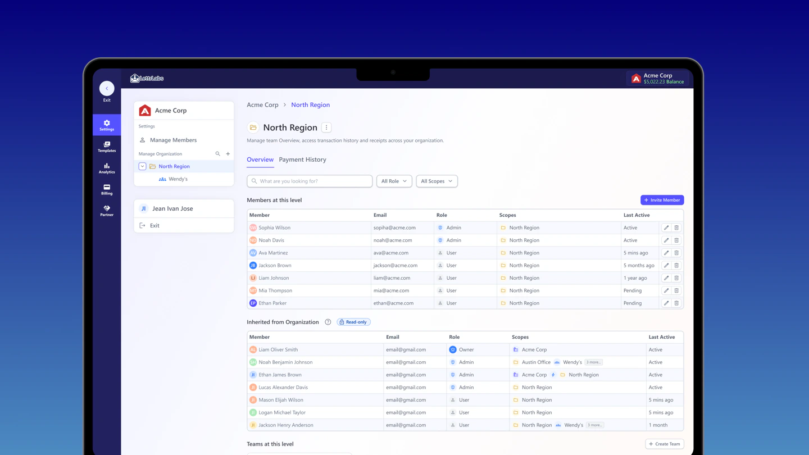
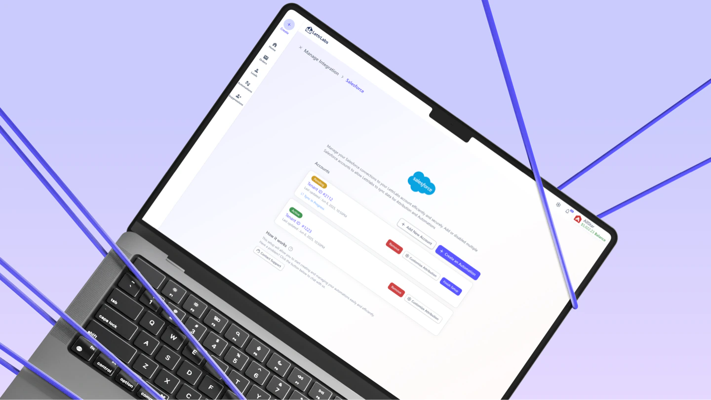

Ivan Jose · Product Designer
Case study decks
Four decks, one per case study. Each runs about eleven slides and covers the same ground: the problem, what I owned, how the work was shared with product and engineering, the decision I had to argue for, the shipped UI, and the outcome. Everything in them comes from the written case studies.
Use ← and → to move through a deck. Print to PDF to send one on.

Org Management
12 slides · One permission system across five surfaces

Enterprise Billing
12 slides · Pooled balances, caps, and disbursement

Audience Map Builder
12 slides · One audience model, five entry points

Integration Framework
13 slides · One connection pattern for every connector